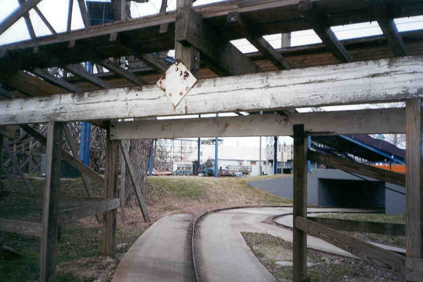
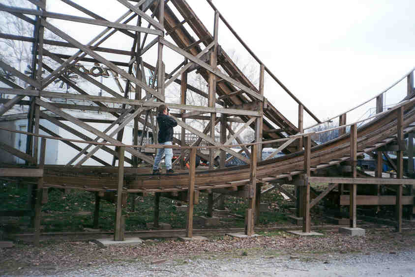

| Americana Amusement Park is in LeSourdsville Lake. A recent email from an angry viewer prompted me to finally make some corrections and updates about the location and state of the park. As clearly stated above, the park is now reopen for PAID business. As any regular readers know, we never endorse entering a park illegally as the entire reason for this site is to preserve small parks like Americana and their history. |
|
 |
Americana is right next door to the old Fantasy Farm. Fantasy Farm is the abandoned park that we were visiting when we ran in to Americana. American's fate was grim at the time of our visit. The park was closed and did not reopen for the following seasons. I'm acually surprised the park did reopen given the larger Ohio parks it has within a few hours (or less) drive. |
| I still stand by my statement that at the time I'm not even sure if we did anything illegal when we entered. We certainly did nothing harmful. We walked through some woods near the park to get a better view. We walked up the bank of the river, and we were in the park. At the time I wrote this I commented that this would be a great way to enter the park if open although to anyone who has been to the park, this is an obvious joke as there is no way someone could get away with this given the layout of the park.... anyway, this is the first view we got after coming up the riverbank. Its a somewhat behind the scenes area. | 
|
|  | The picture to the left shows where the "turnpike" cars went under the coaster. Notice this beam is still white. If I remember correctly the entire coaster was originally white. It appears to have had the wood replaced. I originally could only comment on what the coaster looked like, but I have since road it, and it is wicked. This is one of the last old school woodies in the area. It originally came from Moxahala park from what I understand. At the time, we did consider pulling a National Lampoon's American Vacation by forcing the guard to run the rides, but I don't think Americana's owners are as nice as Roy Wally. |
| The picture being taken in this picture is not on this site, but it can eventually be found at Forgotten Ohio. I was too afraid of getting in trouble for climbing around on the coaster. My friend wasn't... The resulting picture turned out really good. Those hills are steeper than they look when you see them up close. I can now tell you that they throw you from your seat like you wouldn't believe. It's worth the cost to get in for one ride on this unfortunately short coaster. |  |
 |
Inside the giant tent we found most of the ride cars in storage. I was surprised that they didn't store them somewhere better than this, specially the turtles. It appeared to be mostly kiddy ride cars unless people in LeSourdsville are really small. There were also some tilt-a-whirl cars here. I wish we'd have gotten our picture taken in one of them. My partner 'Charlie' sat in one of the helicopters, but it almost tipped over and killed him so we moved on. |
| Before moving on, here is a picture of one of the turtles up close. I wish I had inspected it more to see if it was a real Traver turtle ride. I'm sure anyone who knows anything about them could tell me right away. It looked a little to new to be a real one, but if I'm not mistaken, Traver did build kiddy turtles. | 
|
{kind=link}
{kind=link}